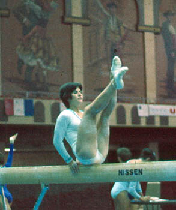

Ann Carr (USA)
1975 Pan American Games AA Champion

Ann was born on January 16, 1958. She began gymnastics at age 7, and at 11 started training with Bill and Ginny Coco at the Manettes club in Philadelphia. A standout gymnast at Penn State in the late 1970s, Ann is now married with four sons. She works in the Philadelphia elementary school system as a physical education teacher.
Competition Results
1971
AAU JO Jr. Nationals: 2nd AA
1972 1973 1974 1975 1976 1977 1978 1979 1980 This page was created on December
20, 2000 and was last updated on June 23, 2021.
USGF Championships: 2nd V
AAU Championships: 5th AA, 3rd V
USA-HUN Dual Meet: 2nd Team, 12th AA
AAU Championships: 2nd AA, 1st B, 2nd V
Elite Qualification Meet: 9th AA
Golden Sands International: 3rd AA
2nd Elite Qualification: 4th AA
US Worlds Trials: 5th AA
USGF Elite Nationals: 3rd AA, 4th V
AAU Championships: 2nd AA, 1st UB, 1st FX, 2nd V
Milk Meet: 4th AA
Moscow News: 8th AA
Pan American Games: 1st AA, 1st UB, 1st B, 1st FX
Pan American Games Trials: 1st AA
Riga International: 4th AA, 3rd V,
3rd UB
USA-FRG Dual Meet: 1st Team, 1st AA
USA-CAN Dual Meet: 1st Team, 3rd AA
USA-ROM Dual Meet: 2nd Team, 5th AA
USA Olympic Trials: 13th AA
AIAW Division I Championships: 1st AA, 2nd V, 3rd UB, 3rd B, 4th FX
Mardi Gras Invitational: 2nd AA
University Games: 6th FX
University Games Trials: 2nd AA
AIAW Division I Championships: 1st Team, 1st AA, 1st UB, 1st B, 1st FX, 4th V
Mardi Gras Invitational: 5th AA
AIAW Division I Championships: 2nd Team, 5th UB
AIAW Division I Championships: 1st Team, 2nd AA
© Gymn Forum